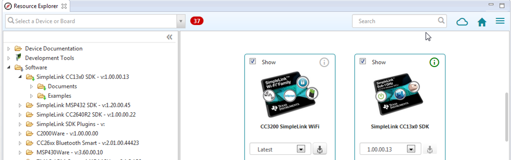
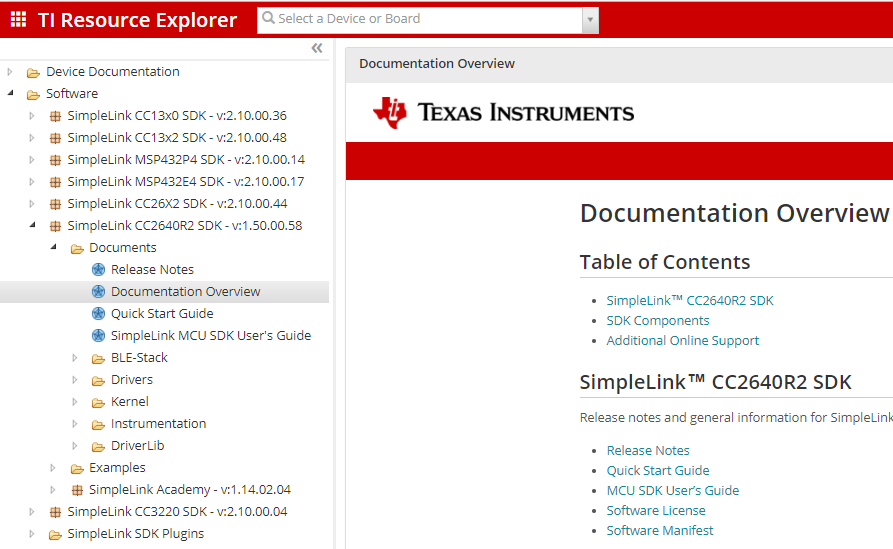
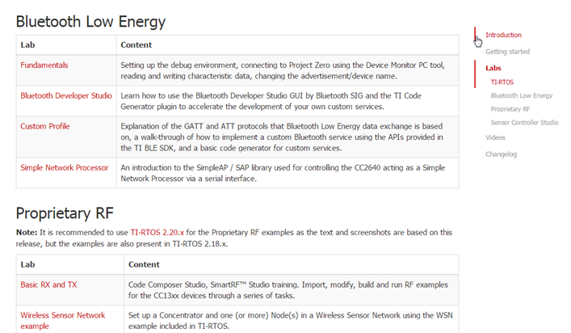

Proprietary RF Quick Start Guide¶
This short tutorial gets you started with the SimpleLink CC2640R2 SDK eco system.
0. Basics¶
The CC2640R2F combines a flexible, very lowpower RF transceiver with a powerful 48-MHz Arm® Cortex® -M3 microcontroller in a platform supporting multiple physical layers and RF standards. A dedicated Radio Controller (Cortex® -M0) handles low-level RF protocol commands that are stored in ROM or RAM. To be able to provide low power and high functionallity, power domains and modules on the chip have to be turned on and of in a correct sequence. Using the TI provided drives achieves this. It is also recommended that CC2640R2F runs a OS to schedule access to the peripherals on the chip. TI provides the following in the SDK:
TI-RTOS TI-RTOS (RTOS Kernel) Overview
noRTOS noRTOS Overview
1. Get the SimpleLink CC2640R2 SDK¶
It is recommended to download the SimpleLink CC2640R2 SDK via the resource explorer in CCS.
Figure 1. The resource explorer in CCS.¶
Or alternatively, download the SimpleLink CC2640R2 SDK manually from the TI website.
The SimpleLink CC2640R2 SDK contains:
Libraries
TI-RTOS kernel (previously named SYS/BIOS)
TI-Drivers (high-level hardware abstraction)
DriverLib (low-level hardware abstraction, previously named CC26xxWare)
TI Bluetooth® Low Energy (BLE) software stack
TI Bluetooth® Low Energy 5 (BLE5) software stack
Resources
Example projects for the TI-RTOS kernel and TI-Drivers
User guides
API references
2. Bookmark the SDK Documentation Overview¶
The documentation overview page is the entry point for all SDK-related documentation and it is highly recommended to bookmark it in the browser.
Go to http://dev.ti.com/tirex/
Software
-->SimpleLink CC2640R2 SDK-->Documentation Overview
Figure 2. The SDK documentation overview page on the TI Resource explorer.¶
It is also available offline in the Resource Explorer of CCS.
3. Try out the SDK Example Projects¶
The CC2640R2F MCU SDK contains a set of proprietary RF examples for creating a Proprietary RF protocol with CC2640R2F. The examples show how to use peripherals such as GPIO, UART, LCD, etc., in conjunction with the RF Driver, as well as demonstrating best practice use of TI-RTOS features such as Tasks, Semaphores, Events and HWI callbacks. All examples are written to use CC2640R2F in an optimal way out of the box. The TI-RTOS software framework and RF driver ensure that the device enters optimal power mode at any given point in time. All the RF examples have support for the CCS and IAR IDE.
For more information about the different Proprietary RF examples provided, see the Examples User’s Guide.
4. Follow the SimpleLink Academy Trainings¶
SimpleLink Academy contains multiple tutorials for all SimpleLink devices, but also the CC2640R2F family.
Figure 3. SimpleLink Academy.¶
5. Read the User’s Guides¶
All software concepts are explained there. You will find all user’s guides mentioned on the documentation overview page of the SDK:
6. Watch the Kernel Workshop Videos¶
If you have never used TI-RTOS before, these online video workshops give you a fast start.
7. Look into the API References¶
The API references explain details about all functions and types in the SDK. They can be reached from the documentation overview page of the SDK:
8. Consult the Technical Reference Manual¶
The CC13x0 CC26x0 SimpleLink Wireless MCU Technical Reference Manual describes the CC2640R2F family in more detail. It is helpful when extending and writing TI Drivers.
9. Ask for support on E2E¶
Search for similar questions on E2E : https://e2e.ti.com/support/
When asking a question:
Compress information: Do not write essays, but be precise.
Describe: What do you want? What did you try? What is the error?
When contacting TI customer support:
Isolate the problem first.
Provide a minimal working example application.
This saves time for you and us and will lead to better response times.